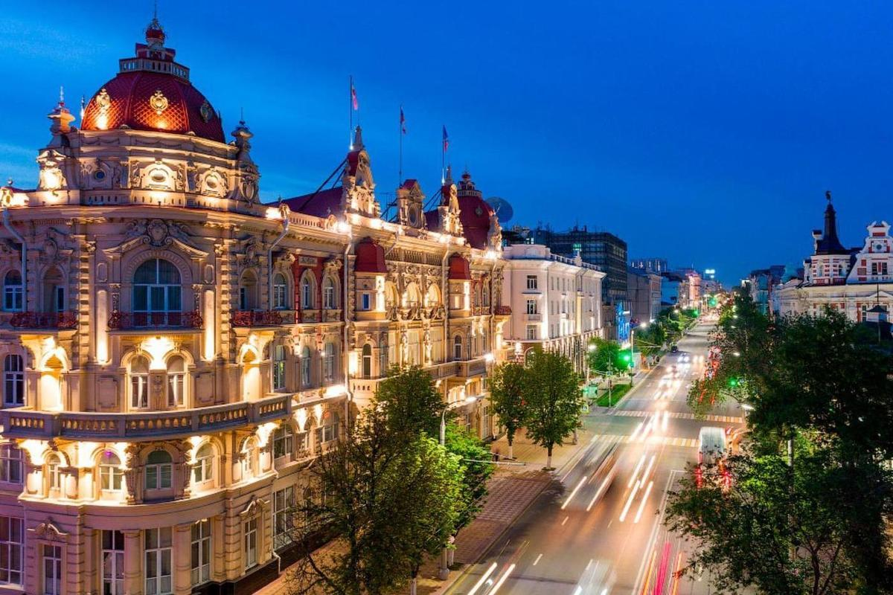
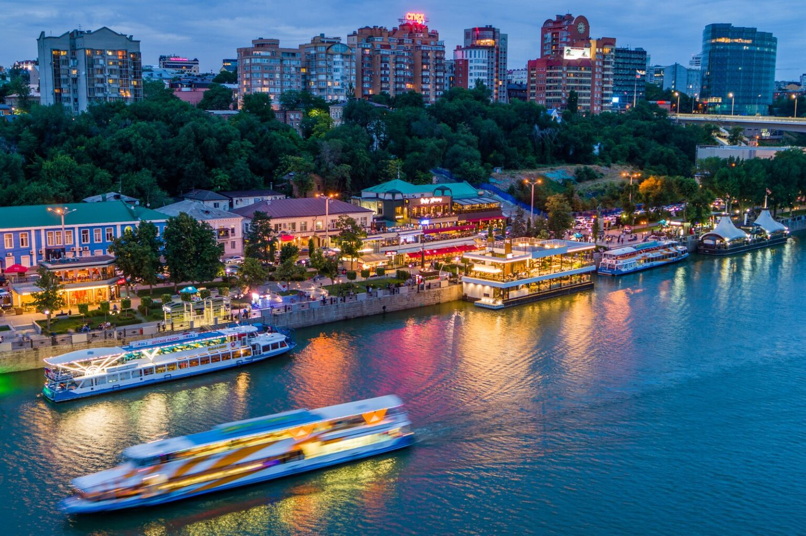

Ростов-на-Дону находится на юго-западе России и замыкает десятку в списке крупнейших городов страны. Это административный центр Ростовской области и Южного федерального округа, крупный промышленный, научный и культурный центр юга России, важный узел транспортных магистралей и порт с выходом в пять морей. Жители города именуются ростовчанами.
Ростов называют южной столицей России, это «Ворота Кавказа» и «Город-купец». В языке укоренилось выражение «Ростов-папа», в ответ Одессе, имеющей статус «мамы». Этим «титулом» Ростов «наградили» его ловкие воры и мошенники, что орудовали в городе в дореволюционные годы.

